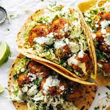

Spicy Shrimp Tacos

Description
Get ready to spice up your dinner routine with our Spicy Shrimp Tacos. Succulent shrimp, seasoned with zesty taco seasoning, are quickly cooked to perfection and piled onto warm tortillas. Top them with crisp lettuce, juicy tomatoes, creamy avocado, and fiery jalapeños for a burst of flavor in every bite. Garnish with fresh cilantro and a squeeze of lime for a taco night that's sure to impress.
Ingredients
- 1 lb large shrimp, peeled and deveined
- 1 tablespoon olive oil
- 1 tablespoon taco seasoning
- 8 small corn or flour tortillas
- Shredded lettuce
- Diced tomatoes
- Sliced avocado
- Sliced jalapeños
- Lime wedges
- Cilantro for garnish
- Hot sauce (optional)
Steps
- In a bowl, toss the peeled and deveined shrimp with olive oil and taco seasoning until evenly coated.
- Heat a skillet over medium-high heat. Once hot, add the seasoned shrimp to the skillet and cook for 2-3 minutes on each side until pink and cooked through.
- Warm the tortillas in a separate skillet or in the microwave.
- To assemble the tacos, place a few shrimp on each tortilla, and top with shredded lettuce, diced tomatoes, sliced avocado, and sliced jalapeños.
- Squeeze fresh lime juice over the tacos and garnish with cilantro.
- Serve the Spicy Shrimp Tacos with lime wedges and hot sauce on the side for an extra kick of flavor.
- Enjoy these flavorful and satisfying tacos as a delicious meal any day of the week!